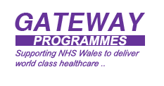

|  |
Welcome to the Gateway to NHS Wales Graduate Programme home page
Welcome to Talent Studio – your electronic portfolio supporting your progression through the Graduate Scheme and beyond.
Whether you are already in the NHS, or you have just joined the graduate scheme, we invite you to share in our commitment to create world class health services for people in Wales.
Our challenge as managers and leaders is to have bold ambition for the NHS and to release its immense potential to innovate - while at the same time, to get the detail right for every patient, every time.
This is what makes a management career with the NHS such a uniquely powerful, life-enhancing proposition. And why we want to attract the brightest and best management talent to the NHS, to become our managers and leaders of the future.
You will see in My Details and personal information questionnaire in your Portfolio that we have already entered most of the information given to us in your initial application. Please check that this information is correct and make any necessary updates. It is your responsibility to keep this information as current as possible.
Talent Studio will evolve over the coming months to support the Performance Management Process and capture information such as exam and assignment results. Currently you can complete your Assessment Centre reflections and start to build on your orientation plan.
You should find all you need to start using the system in the Talent Studio User Guide and Graduate Scheme Handbook.
For support, please contact: shan.wozencroft@nliah.wales.nhs.uk
Downloads
-
 User Guide
User Guide
- Download the User Guide
Account Info
-
My Account
- Manage your account
To-do Lists
-
Reviews
- List of reviews that have not yet been completed.
-
Questionnaires
- List of questionnaires that have not yet been completed and need answering.